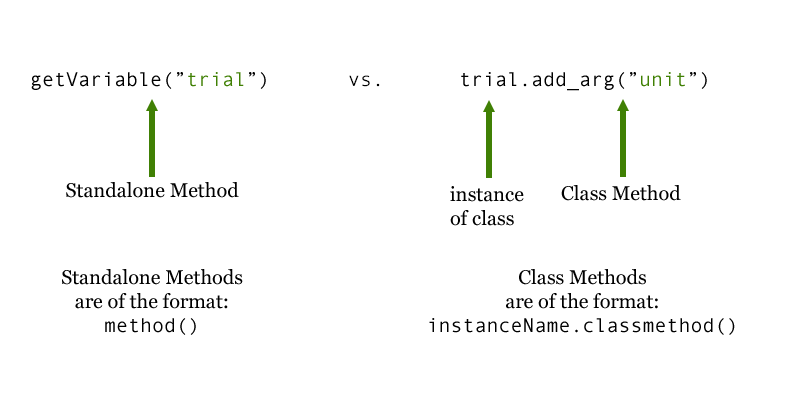

Classes, Methods, and Parameters¶
Ruby, the programming language that the Datavyu API uses, is an object- oriented language.
Classes¶
<<<<<<< HEADObject-oriented languages represent concepts, like Datavyu’s columns or cells, for instance, as “objects”. Objects come in different types, or “classes”. For example, objects that represent numbers, strings (written text), or Datavyu columns have different classes.
=======Object-oriented languages represent concepts—for example, Datavyu columns or cells—as “objects”. Objects come in different types or “classes”. For instance, different classes could be numbers, strings, integers, Datavyu columns, or Datavyu cells.
>>>>>>> 607742916dc7761ce895a54552146c98161c4a9cAn object can have a variety of attributes depending on the data that pertains to the object. In Datavyu, a cell object’s attributes would be its codes; a column object’s attributes might be its cells, its name, and its onset and offset times. The class of an object defines what types of attributes a specific type of object will have.
Thinking about Datavyu specifically, the “column” class describes the Datavyu
columns. The “trial” object in the example spreadsheet
would then be an instance of the “column” class. This is in fact how the
Datavyu API works. The Datavyu API includes two classes to represent
Datavyu concepts: RColumn describes Datavyu’s
columns, and RCell describes Datavyu’s
cells.
Methods and Their Parameters¶
While classes describe objects and their attributes, methods define actions that you can perform on an object. The Datavyu API defines numerous methods to help you manipulate, modify, add, and delete data in the Datavyu spreadsheets.
In order to work, many methods need additional information. For
instance, getColumn(), retrieves a column from a Datavyu
spreadsheet so that you can modify or update it using your script. But it
needs you to tell it what column it should retrieve.
Each method defines what information it can receive. These are called
parameters. getColumn() has one parameter: name,
which is the name of the column that you wish to retrieve.
Parameters are the types of information that you can specify for a method, and are specified in the method’s definition (you can view all of Datavyu’s method definitions on the API reference page).
The information you actually provide when you use the method is called an “argument”. Arguments
are user-specified. For getColumn(), you
might want to retrieve a column called “trial”, so “trial” would be your
argument for the name parameter. Again, parameters are part of the
method’s definition, while arguments are the information you provide
to the method.
For example, the add_codes_to_column() method enables users to
add one or more codes to a
column. add_codes_to_column() has two parameters: column,
the name of the column you want to update, and *codes. The *
indicates that the parameter is a list: so you can specify one (or
<<<<<<< HEAD
more) codes as a list of Strings.
Suppose you wanted to add two codes, “leftHand” and “rightHand” to the
“arm” column. “arm” would be your argument for the column
parameter, and "leftHand", "rightHand" your argument for the
*codes parameter. column and code are specified in the
add_codes_to_column() method definition, and “arm”, “leftHand”,
and “rightHand” are your user-specified arguments.
 =======
more) codes as a list of Strings.
=======
more) codes as a list of Strings.
Suppose you wanted to add two codes, “leftHand” and “rightHand” to the
“arm” column. “arm” would be your argument for the column
parameter, and "leftHand", "rightHand" your argument for the
*codes parameter. column and code are specified in the
add_codes_to_column method definition, and “arm”, “leftHand”,
and “rightHand” are your user-specified arguments.
Standalone Methods and Class Methods¶
There are two different types of methods: standalone methods and class methods. Class methods act directly upon an instance of a specific class. Standalone methods perform actions on their own.
getColumn() is a standalone method that you use to retrieve
a column from the Datavyu spreadsheet so that you can modify it with your
script. To retrieve a column called “trial” from the spreadsheet, you
would run:
getColumn("trial")
In contrast, add_code() is a class method of the
RColumn class, and is invoked on an
RColumn object. Assuming that you have already retrieved a
column called “trial” from the spreadsheet, and assigned it to an
RColumn object, the following code would add the newCode
code to the “trial” RColumn object:
trial.add_code("newCode")
Comparing them side-by-side can help highlight the difference:
Understanding the difference between standalone and class methods will make it easier for you to easily use the methods included in the Datavyu API.
Next Steps¶
Now that you have a grounding in the difference between classes and methods, parameters and arguments, and know how to invoke both standalone and class methods, consider our Introduction to Scripting for tips before diving into the API Tutorials.